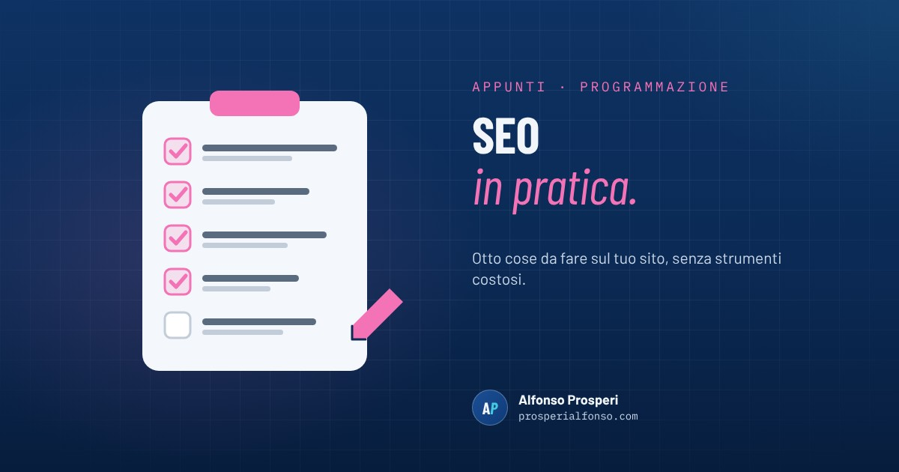

Nella prima parte abbiamo visto cos'è la SEO e come Google sceglie i risultati. Qui passiamo alla pratica: una lista di cose che chiunque abbia un piccolo sito può fare, senza strumenti costosi.
1. Parti dalle domande delle persone
Prima di scrivere, chiediti come cercherebbe il tuo servizio una persona qualsiasi. Spesso conviene puntare su frasi più precise e meno inflazionate, per esempio "riparazione biciclette elettriche a Teramo" invece di "biciclette". Sono le cosiddette parole chiave a coda lunga: meno ricerche, ma persone che sanno già cosa vogliono.
2. Un titolo chiaro per ogni pagina
Il titolo della pagina (quello che compare in blu nei risultati) deve dire in poche parole di cosa parla, con le parole che le persone cercano. Ogni pagina ha il suo titolo, diverso dalle altre.
3. Una descrizione che invogli a cliccare
La meta description è il breve testo sotto il titolo. Google non sempre la usa, ma quando lo fa è il tuo "biglietto da visita": una o due frasi che riassumono la pagina.
4. Testi ordinati e originali
Usa i sottotitoli per dividere il testo in parti, frasi brevi ed elenchi dove servono. Scrivi testi tuoi, non copiati da altri siti, e aggiornali quando le informazioni cambiano.
5. Immagini leggere e descritte
Riduci il peso delle foto prima di caricarle e dai a ogni immagine un testo alternativo (alt) che descriva cosa mostra. Serve a Google e alle persone che usano un lettore di schermo.
6. Un sito veloce e comodo da telefono
La maggior parte delle ricerche parte dallo smartphone. Controlla che il sito si legga bene senza zoomare e che si apra in fretta: lo strumento gratuito PageSpeed Insights di Google ti dice cosa migliorare.
7. La scheda della tua attività su Google
Se hai un'attività con una sede, crea o aggiorna il Profilo dell'attività su Google: orari, indirizzo, foto, telefono. È quello che compare su Google Maps e nelle ricerche "vicino a me", ed è gratuito.
8. Controlla con Google Search Console
Search Console è lo strumento gratuito di Google che ti dice quali pagine sono state indicizzate, con quali ricerche le persone ti trovano e se ci sono errori. Una volta collegato il sito, puoi anche chiedere a Google di guardare una pagina appena pubblicata.
E i link da altri siti?
Contano ancora: se siti affidabili parlano di te e ti linkano, Google lo considera un segnale positivo. Ma vanno guadagnati, per esempio con contenuti utili o collaborazioni vere. Comprare link o scambiarli in massa è contro le regole di Google e può peggiorare la situazione.
Se vuoi anche visibilità immediata, a pagamento, leggi cos'è la SEM.